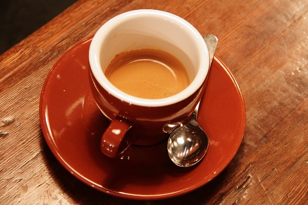

SAMPLE SCENE The coffee desk
Start a source to detect objects
Track desk objects in this session. For saved person IDs and cross-camera matching, open Start-ARGUS-X.bat and select Live detection.

Show a cup in good light. Pin its ID, hide it behind a book for a few seconds, then reveal it. Watch for a recovery event or an uncertain match.